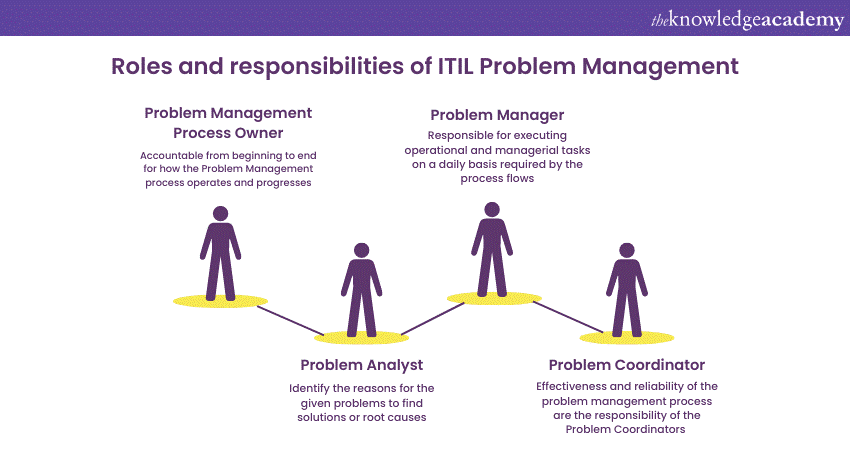

Role: Researcher • Time: 1 week
Purpose: To gain knowledge of problem management as a career including job titles, prospects, requirements, and responsibilities.
A problem manager works to identify and manage IT problems that a company faces. They are typically the main point to handle all problems that occur within the IT sector of a business. This role works to prevent problems by finding underlying causes and creating solutions that will minimize the impact of future incidents.
Problem managers offer multiple benefits to a business including continuous service improvements, increased productivity and satisfaction, decreased incident resolution times, minimized service disruptions, and decreased costs associated with incidents.
The career options for problem managers are varied, and have different levels of responsibility.

Bank of America
Global Incident Management Coordinator is responsible for coordinating the restoration of an incident as quickly as possible following the enterprise policy and procedures for Incident Management.
ResMed
As a Major Incident Manager, you will be part of Global Technology Solutions (GTS), reporting into the Corporate Infrastructure & Services organization. This trusted, high-impact team drives operational resilience across Resmed through Incident Response, Change Enablement, and Problem Management.
Kia Corporation
The Senior Incident Response (IR) Manager provides strategic and operational leadership for detecting, responding to, and eradicating cyber threats targeting Kia America (KUS) and its affiliated entities.
Walt Disney
The Business Operations Manager - Incident Management will collaborate with various teams at The Walt Disney Company, including product, engineering, analytics, legal, customer service, and finance. This role involves translating technical root causes into business impacts and frequently engaging with senior executives through crafting concise memos and reports and responding promptly to executive inquiries.
Prevents major outages
Boosts productivity
Enhances customer satisfaction
Faces challenges like constant multitasking
Deals with frustrating vendors
Manags high-pressure situations with limited resources
Overall, the role of a problem manager offers stability, good earning potential, and high impact by reducing downtime, improving service quality, and boosting customer satisfaction through root cause analysis and proactive fixes. It's a critical, future-proof role for analytical, people who enjoy solving complex issues and enhancing system reliability.